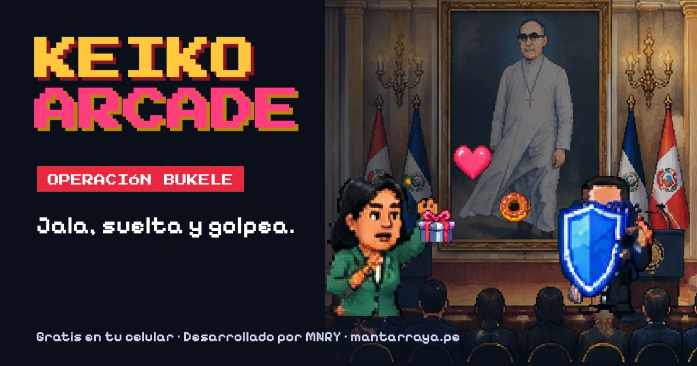
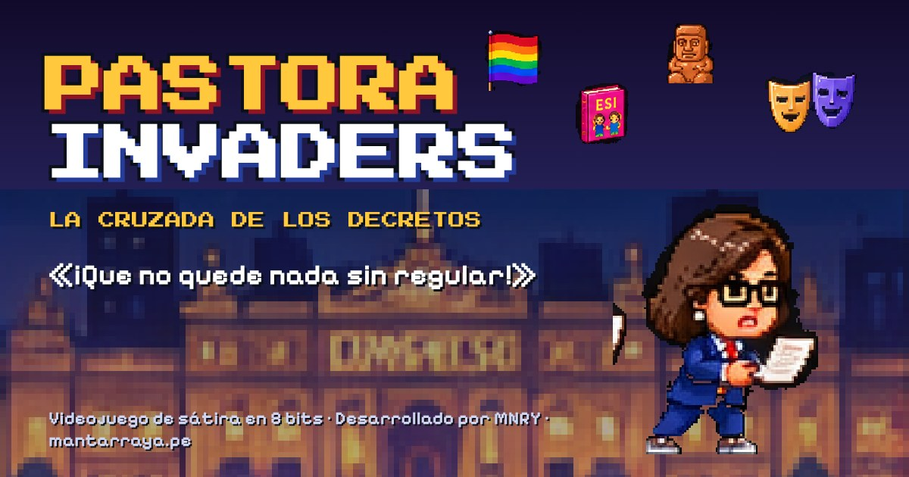

KEIKO TAP TAP: EN LIVE
El original. Consigue likes y esquiva ministros.
JUGAR ▶NUEVO
PALA FOTO
Toma la foto sin volarle los techos al pueblo.
JUGAR ▶
KEIKO ARCADE
Cuatro niveles para que Bukele le haga caso.
JUGAR ▶
PASTORA INVADERS
Que no quede nada sin regular.
JUGAR ▶
PRÓXIMAMENTE
Un juego nuevo en camino.